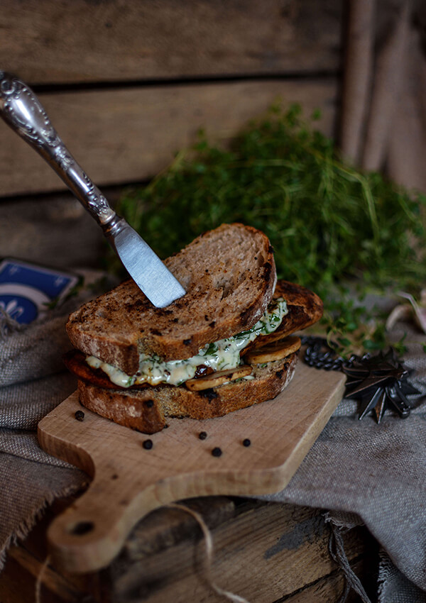

A food item in "The Witcher 3: Wild Hunt"
It can be used to generate vitality, especially when one is low on potions.
Ingredients
- Chicken breast (350g)
- Mushrooms (100g)
- Rye bread (4 slices)
- Rapeseed oil (1 tablespoon)
- Mayonnaise (3 tablespoons)
- Parsley (handful)
- Lemon juice (1 tablespoon)
- Salt
- Pepper
- Dark beer, stout type (200ml)
- Garlic (2 cloves)
- Spicy mustard (1 tablespoon)
- Honey (1-2 teaspoons)
- Lemon juice (half a lemon)
- Sweet paprika powder (half teaspoon)
- Salt
- Pepper
Recipe instructions
- Put the ingredients for the marinade into the saucepan and mix thorughly to combine.
- For the sauce, combine together mayonnaise, lemon juice, finely chopped parsley, and a pinch of salt and pepper. Put the sauce in the fridge.
- Frying pan version: Place the marinated meat on a hot, greased pan (preferably grill pan). Fry the fillets for about 4 minutes on medium heat, then turn them on the other side and fry for another 5 minutes. Additionally, fry each side for 30 seconds, gently holding the meat with tongs. At the end of frying, add a few tablespoons of water (it will sizzle and smoke) and shake the pan. Then cover it with a lid, reduce the gas to a minimum, stew for 1 min and turn off the burner. Pull the chicken out and transfer it to the plate.
- Barbecue version: In the case of a traditional outdoor barbecue, the meat should be prepared with usage of trays. Grill marinated fillets for approx. 15 minutes, occasionally turning them over and spreading the remains of the marinade. When meat is properly browned, put it on the side of the grate (so that it's not directly above the burning coal) and leave for about 1-2 min of rest. Then transfer it on the plate.
- On the same pan or grill, quickly grill the mushrooms, cut into thick slices (about 1 minute on each side), and finally sprinkle them lightly with salt and coarsely ground pepper. Remove the mushrooms from the pan/grill and toast the slices of bread, also about 1 minute on each side.
- Spread sauce on a slice of toasted bread, add grilled mushrooms and chicken breast, put on a second slice and also spread with sauce.
Return to top
Return to main page